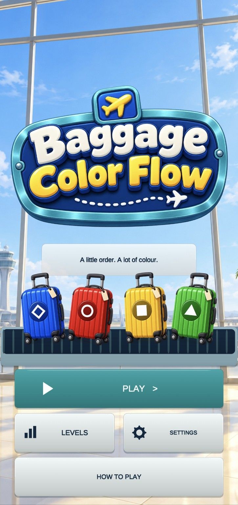
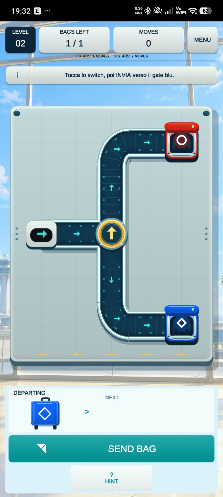
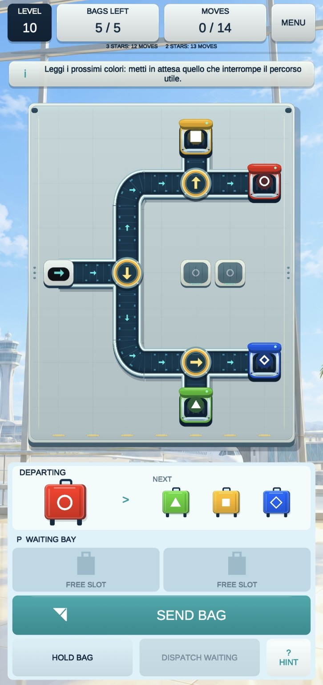
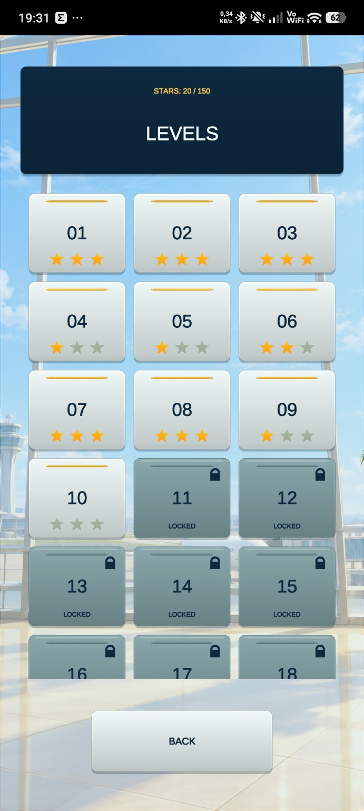

Color matching
Send each suitcase through the conveyor network to the gate that matches its color and symbol.
IN DEVELOPMENT • MOBILE PUZZLE
Bring order to the baggage system. Read the upcoming colors, rotate conveyor switches, use waiting bays when needed and route every suitcase to the correct gate.
Currently in development and not yet available on Google Play.
GAMEPLAY
Baggage Color Flow is a portrait mobile puzzle built around clear routes, limited moves and increasingly demanding baggage sequences.
Send each suitcase through the conveyor network to the gate that matches its color and symbol.
Rotate diverters to change the active path and prepare the network before the next bag departs.
Temporarily hold a bag when its route is blocked, then dispatch it when the system is ready.
Solve each layout within increasingly tight move limits and aim for the best three-star result.
Progress through an initial set of 30 levels designed to introduce mechanics and build difficulty gradually.
A portrait interface keeps the board, baggage queue and controls readable and easy to reach on a phone.
SCREENSHOTS
Current development screenshots from the Android build, including the main menu, level selection and two puzzle layouts.
Swipe horizontally to browse the current approved screenshot set.

The airport-inspired home screen introduces the four baggage colors and the core game modes.

Learn how a switch redirects the conveyor path and sends baggage toward the correct gate.

Plan around multiple gates, diverters and the waiting bay while keeping moves under control.

Unlock new puzzles, collect stars and revisit solved levels to improve your score.
PRESS & CREATOR RESOURCES
Official game facts, development screenshots and key art are available in the LuSor Games press kit.
Open press kitDLF TECHNOLOGY
Baggage Color Flow is currently being developed by DLF Technology as a mobile-first sorting and routing puzzle.
The game is still in development, so visuals, level balancing and features shown here may change before release.
MORE FROM LUSOR GAMES
Restore a seaside resort through portrait merge gameplay and character orders.
Discover NereluneDrop and combine celestial bodies in a physics-driven cosmic puzzle.
Discover Astral FusionShape a life through choices about time, work, relationships and wellbeing.
Discover Life Unwritten